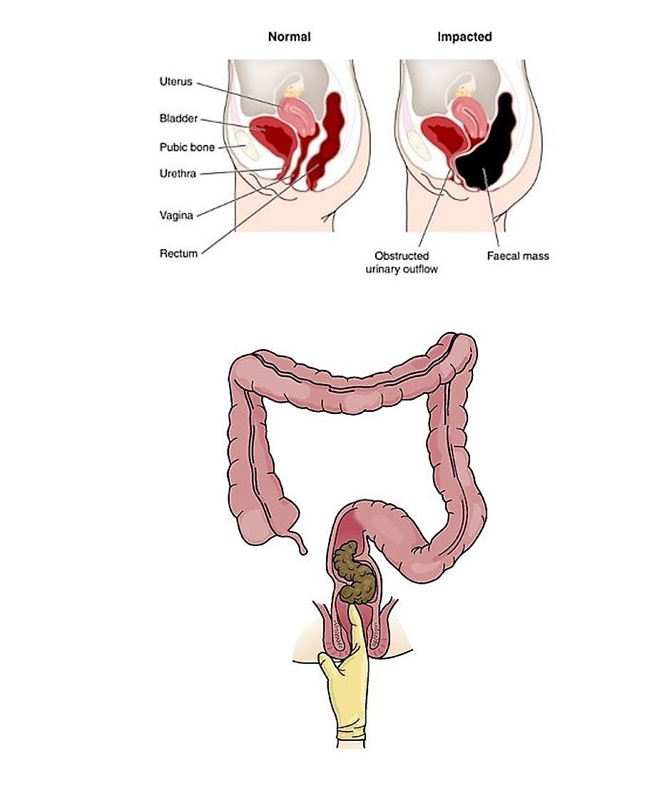
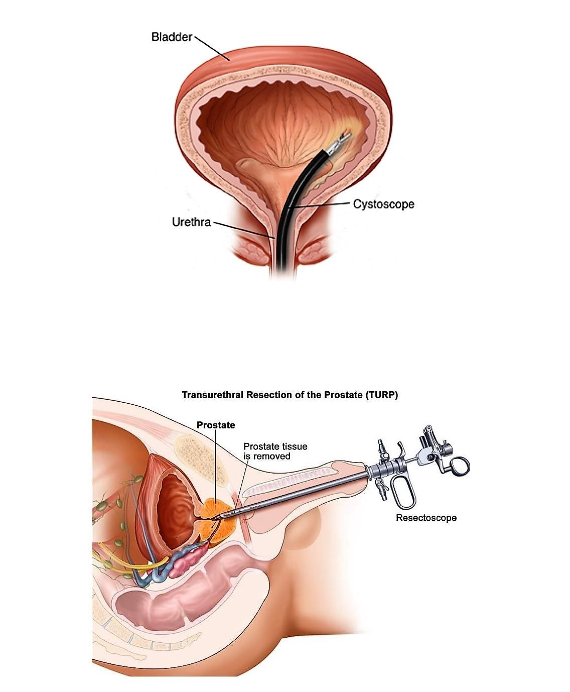

Medical Product Acceleration Internship
MEDX is an active management accelerator in Israel's healthcare entrepreneurship scene. During my time as an intern I provided protoypes, procedure research, competitive analysis, and technical due dilligence directly to the CTO and business leads to inform new product strategy, R&D initiatives, and investments across their portfolio of medical technologies.
MEDX is an active management accelerator in Israel's healthcare entrepreneurship scene. During my time as an intern I provided protoypes, procedure research, competitive analysis, and technical due dilligence directly to the CTO and business leads to inform new product strategy, R&D initiatives, and investments across their portfolio of medical technologies.
- Role
- Competitive Analysis, Market Research,
Product Development, IP - Date
- January 2018 - May 2018
- Location
- Or Yehuda, Israel | Remote
Intro
"How might we determine viability of new products and best allocate time and resources for ongoing investments?"
To determine where to focus innovation efforts for ongoing projects, I created reports with thorough market research, competitive analysis, and design reccomendations. For investigating new products, evaluated feasbility and IP landscape, and provided technical perspective to strategy experts.
Defining Solutions for Fecal Impaction
Often times medical innovation stems from practitioners recognizing an inefficiency or gap in current technology, and seeking a way to address it. One of my main projects was creating a conceptual prototype for a novel therapy to treat fecal impaction cases seen in elder care or in those with colorectal and bowel issues. Impaction occurs when fecal matter can't be expelled from the body and forms a hard mass which needs to be removed. Current treatments for fecal impaction involve manual removal on the doctor's side, and do not do a good job of dignifying the patient through the experience.
I clarified the problem space by documenting major market players and their products, studying current research in the field, and collaborating with medical experts with experience treating cases in the field. Working with our CTO, I iterated on multiple concepts and converged on a prototype for a robotically guided and ultrasound driven therapy to address the condition.
The prototypes I designed and initial findings I generated have been put in the development cycle for further testing and research
Deliverables
Market Report, IP Report, Prototype Concepts
Often times medical innovation stems from practitioners recognizing an inefficiency or gap in current technology, and seeking a way to address it. One of my main projects was creating a conceptual prototype for a novel therapy to treat fecal impaction cases seen in elder care or in those with colorectal and bowel issues. Impaction occurs when fecal matter can't be expelled from the body and forms a hard mass which needs to be removed. Current treatments for fecal impaction involve manual removal on the doctor's side, and do not do a good job of dignifying the patient through the experience.
I clarified the problem space by documenting major market players and their products, studying current research in the field, and collaborating with medical experts with experience treating cases in the field. Working with our CTO, I iterated on multiple concepts and converged on a prototype for a robotically guided and ultrasound driven therapy to address the condition.
The prototypes I designed and initial findings I generated have been put in the development cycle for further testing and research
Deliverables
Market Report, IP Report, Prototype Concepts

Due Dilligence for Transurethral Procedures
In deciding whether or not to invest in a young company, due dilligence is conducted on their business plan and technology portfolio. For our consideration of a robotic therapy for bladder resection, I led the initial technical due dilligence and created a knowledge base designed to support future investigations in the space. Bladder resections are common procedures in which tissue is removed in an attempt to prevent superficial tumours from worsening, and to obtain valuable insight into a patient's condition.
I began with a deep dive into the capabilities of the technology in question, gauging the maturity of the device in it's development cycle. I collaborated with subject matter experts to pick apart everything from the material selection to controlling algorithms. In evaluating the device I reported on it's potential benefit and value proposition compared to existing therpaies and instruments on the market, including resectoscopes, advanced energy treatments, and novel robotic therapies. Understanding the technological capabilities and procedure landscape allowed me to explore alternative usages for the technology, such as prostate resection for treating hyperplasia.
My reports and findings are being used in ongoing consideration for investments in this space!
Deliverables
Initial Findings, 2 Summative Reports
In deciding whether or not to invest in a young company, due dilligence is conducted on their business plan and technology portfolio. For our consideration of a robotic therapy for bladder resection, I led the initial technical due dilligence and created a knowledge base designed to support future investigations in the space. Bladder resections are common procedures in which tissue is removed in an attempt to prevent superficial tumours from worsening, and to obtain valuable insight into a patient's condition.
I began with a deep dive into the capabilities of the technology in question, gauging the maturity of the device in it's development cycle. I collaborated with subject matter experts to pick apart everything from the material selection to controlling algorithms. In evaluating the device I reported on it's potential benefit and value proposition compared to existing therpaies and instruments on the market, including resectoscopes, advanced energy treatments, and novel robotic therapies. Understanding the technological capabilities and procedure landscape allowed me to explore alternative usages for the technology, such as prostate resection for treating hyperplasia.
My reports and findings are being used in ongoing consideration for investments in this space!
Deliverables
Initial Findings, 2 Summative Reports

Final Thoughts
Reflection
Working with MEDX was excellent exposure to the healthcare entreprenurship world, and allowed me to learn about the Israeli tech ecosystem's processes and culture firsthand. Contributing remotely was also highly educational in that it forced me to be on top of communication and timelines.
Takeaways
Seeing how investors and incubators evaluate and tear down new technologies from the inside reinforced good design practices